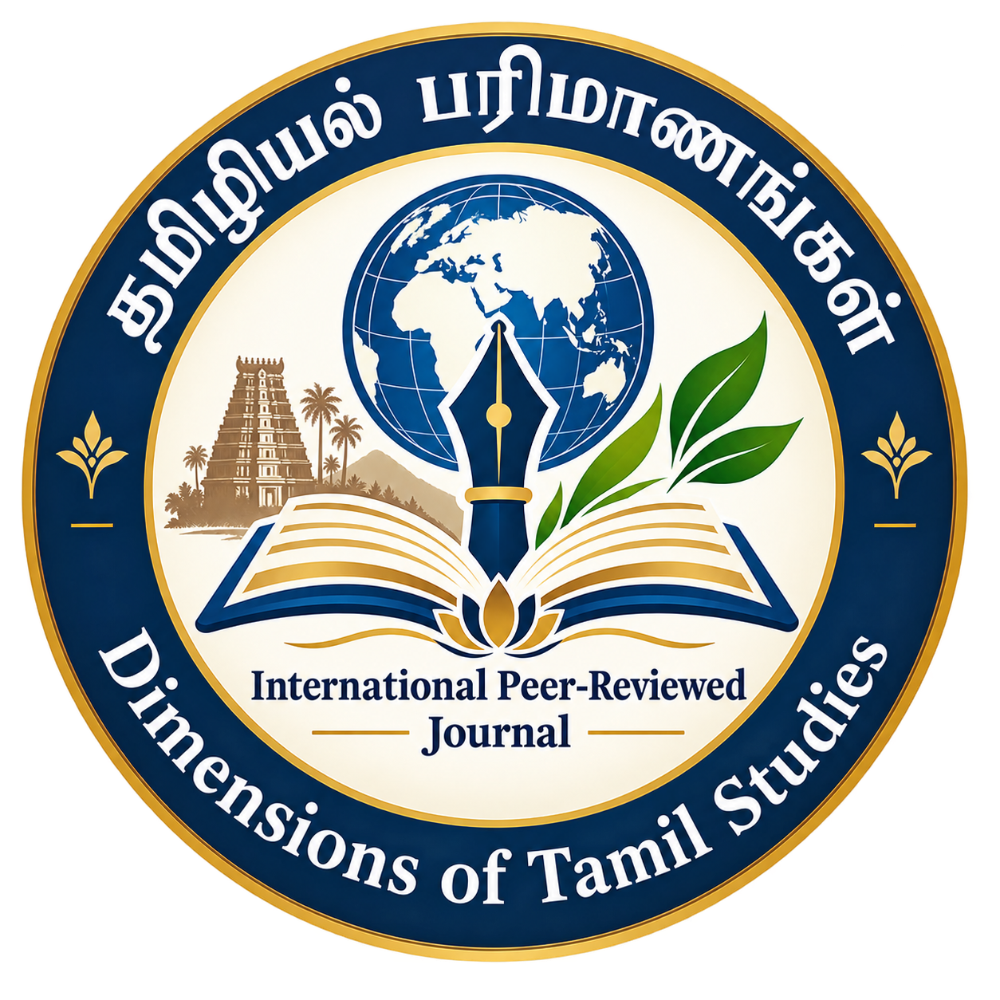

Dimensions of Tamil Studies
An International Peer-Reviewed Quarterly Journal
Volume 1 | Issue 1
September 2026
Women’s issues have occupied an important place in contemporary Tamil literature, particularly in the short stories of Thilagavathi. Her short stories portray the various social challenges faced by women within the family and society and reveal the impact of patriarchal attitudes on their lives. This article examines the representation of women-related social issues in Thilagavathi’s short stories, with particular focus on the neglect of the girl child, sexual violence, harassment of women, and the problems encountered by working women. It also analyses the ways in which women respond to these challenges and the consequences arising from such social conditions. The discussion highlights gender discrimination, the preference for male children, and socio-economic factors associated with marriage expenses and dowry. Thus, Thilagavathi’s short stories serve as a literary representation of women’s struggles and contribute to creating awareness about gender equality and social change.
Thilagavathi, Tamil Short Stories, Women’s Issues, Girl Child Neglect, Gender Discrimination, Patriarchy, Women’s Empowerment, Social Problems